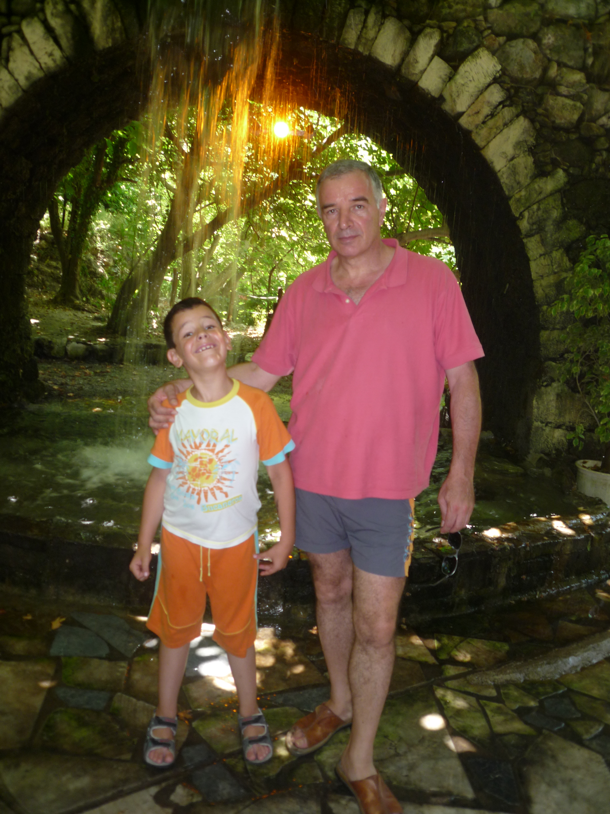

ΧΕΙΡΟΥΡΓΙΚΗ ΠΑΙΔΩΝ · ΛΑΡΙΣΑ
Παντελής
Λαμπρινάκης
Χειρουργός Παίδων Διευθυντής ΕΣΥ
Πολυετής κλινική και επιστημονική πορεία στη χειρουργική παίδων, με υπηρεσία στο Εθνικό Σύστημα Υγείας από το 2003.
Στοιχεία επικοινωνίας
ΓΝΩΡΙΣΤΕ ΤΟΝ ΙΑΤΡΟ
Σύντομο βιογραφικό
Ο Παντελής Λαμπρινάκης κατάγεται από τα Χανιά της Κρήτης. Αποφοίτησε από την Ιατρική Σχολή του Αριστοτελείου Πανεπιστημίου Θεσσαλονίκης το 1991.
Εκπαιδεύτηκε στο Νοσοκομείο Παίδων «Π. & Α. Κυριακού» και απέκτησε τον τίτλο ειδικότητας Χειρουργικής Παίδων το 2002. Η επαγγελματική του πορεία περιλαμβάνει υπηρεσία στο ΕΚΑΒ Θεσσαλονίκης και στο Γενικό Νοσοκομείο Λάρισας, όπου εξελίχθηκε στον βαθμό του Διευθυντή ΕΣΥ τον Ιούλιο του 2018.
Είναι τακτικό μέλος της Ελληνικής Εταιρείας Χειρουργών Παίδων από το 2003.
ΕΚΠΑΙΔΕΥΣΗ & ΕΜΠΕΙΡΙΑ
Επαγγελματική πορεία
- 2018
Διευθυντής ΕΣΥ
Εξέλιξη στον βαθμό του Διευθυντή Χειρουργικής Παίδων στο Γενικό Νοσοκομείο Λάρισας.
- 2006–2018
Γενικό Νοσοκομείο Λάρισας
Επιμελητής Β΄ Χειρουργικής Παίδων από το 2006 και Επιμελητής Α΄ από το 2011.
- 2003–2006
ΕΚΑΒ Θεσσαλονίκης
Χειρουργός Παίδων με βαθμό Επιμελητή Β΄.
- 1998–2002
Ειδίκευση στη Χειρουργική Παίδων
Νοσοκομείο Παίδων «Π. & Α. Κυριακού». Απόκτηση τίτλου ειδικότητας τον Ιούλιο του 2002.
- 1991
Πτυχίο Ιατρικής
Αριστοτέλειο Πανεπιστήμιο Θεσσαλονίκης.
ΕΠΙΣΤΗΜΟΝΙΚΟ ΕΡΓΟ
Συμμετοχή στη γνώση
Συμμετοχή με επιστημονικές ανακοινώσεις σε ελληνικά και διεθνή συνέδρια, με αντικείμενο τη χειρουργική νεογνών και παίδων, το παιδιατρικό τραύμα και τη χειρουργική αντιμετώπιση παιδιατρικών όγκων.
Μετεκπαίδευση στην επείγουσα προνοσοκομειακή ιατρική και συμμετοχή στην εκπαίδευση νεότερων συναδέλφων και στο εκπαιδευτικό πρόγραμμα της κλινικής.
Ενδεικτικές επιστημονικές ανακοινώσεις
- «Το επώδυνο ημιόσχεο πρέπει να χειρουργείται επειγόντως πάντα;» — 24ο Πανελλήνιο Συνέδριο Χειρουργικής Παίδων, 2001.
- «Χειρουργική αντιμετώπιση των νεογνών με χαμηλό βάρος» — 25ο Πανελλήνιο Συνέδριο Χειρουργικής Παίδων, 2003.
- «Κύστεις θυρεογλωσσικού πόρου» — 28ο Πανελλήνιο Συνέδριο Χειρουργικής Παίδων, 2010.
- «Γιγαντιαίοι κυστικοί όγκοι του σπλήνα» — Εαρινό Συμπόσιο Ελληνικής Εταιρείας Χειρουργών Παίδων, 2013.
ΕΠΙΚΟΙΝΩΝΙΑ
Ας επικοινωνήσουμε
Μπορείτε να επικοινωνήσετε τηλεφωνικά
για περισσότερες πληροφορίες.
Λάρισα, Θεσσαλία